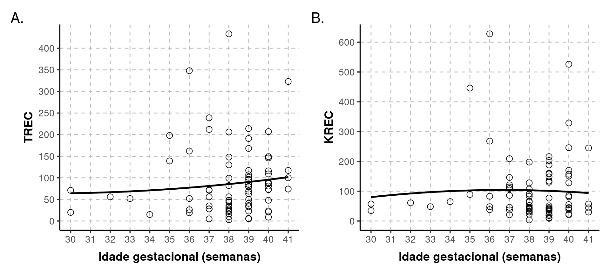
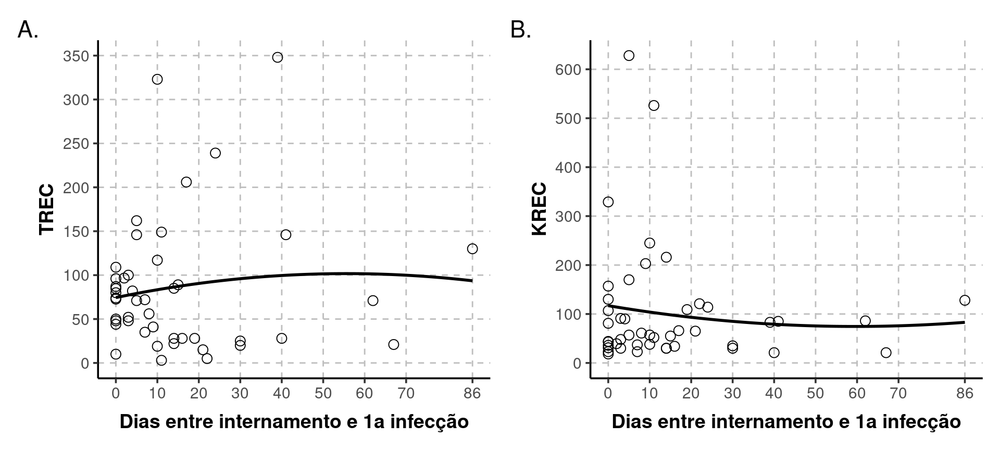
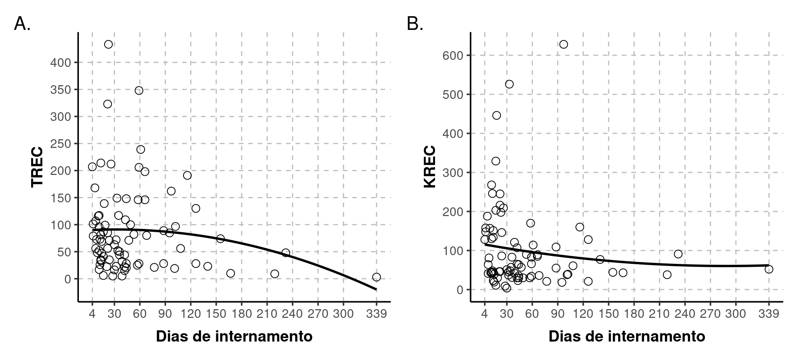
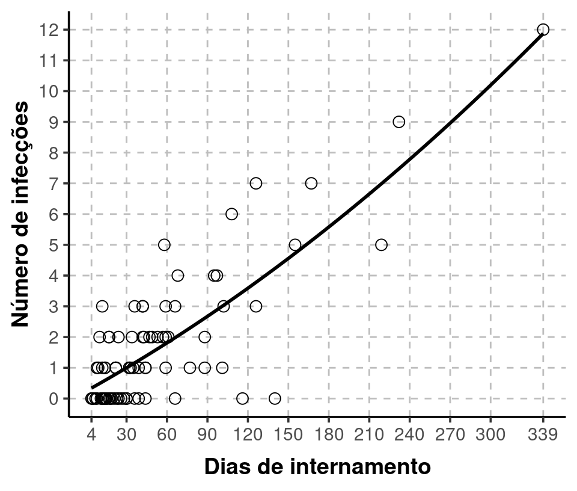
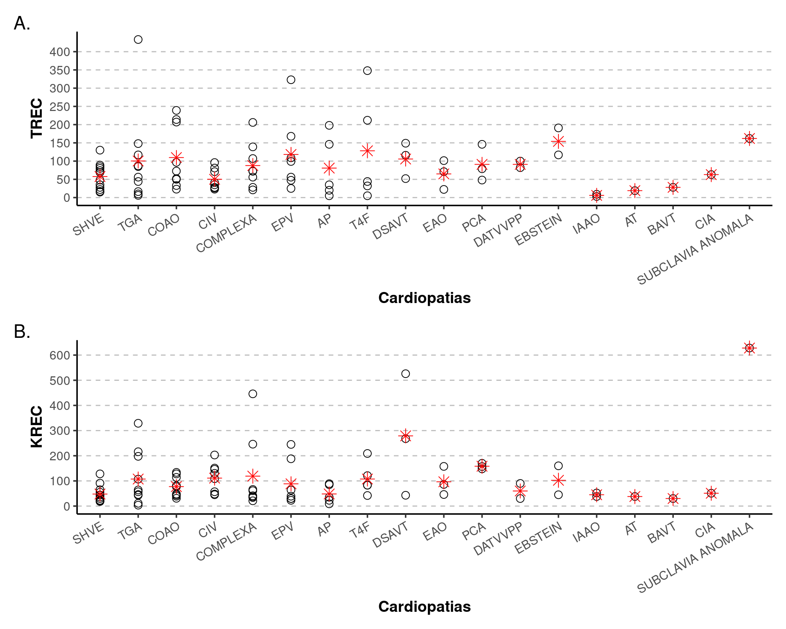
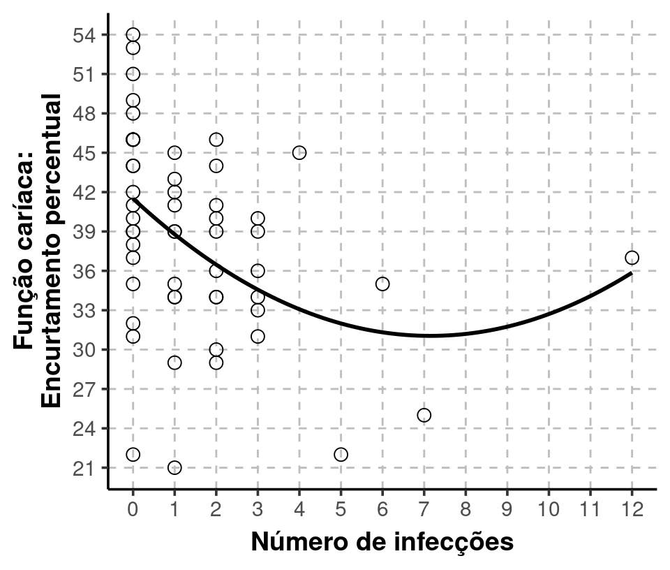
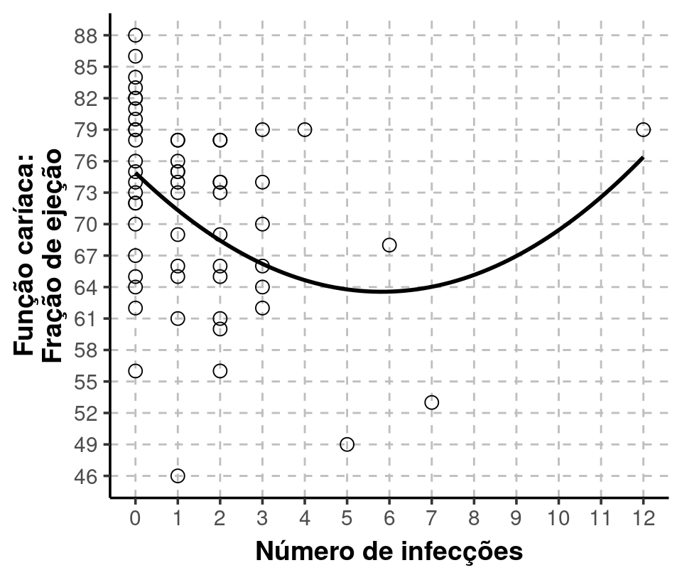

Deleção 22q: TREC & KREC
Bianca Pitanga, Carolina Prando e Henrique Laureano
Last modification on 2022-09-02 16:00:01
Medidas descritivas
| Variável | Media | DP | Mínimo | 1o.quartil | Mediana | 3o.quartil | Máximo | n |
|---|---|---|---|---|---|---|---|---|
| TREC | 86.936 | 80.022 | 3.000 | 28.00 | 71.0 | 112.5 | 433.333 | 83 |
| KREC | 100.574 | 108.863 | 3.667 | 38.00 | 57.0 | 129.0 | 628.000 | 83 |
| Idade.Gestacional | 38.084 | 2.120 | 30.000 | 37.50 | 38.0 | 39.0 | 41.000 | 83 |
| Peso | 3110.313 | 669.009 | 1255.000 | 2732.50 | 3160.0 | 3495.0 | 4995.000 | 83 |
| FC.EP | 38.426 | 7.475 | 21.000 | 34.00 | 39.0 | 44.0 | 54.000 | 54 |
| FC.FE | 71.246 | 9.113 | 46.000 | 65.00 | 73.0 | 78.0 | 88.000 | 57 |
| Número.Infecções | 1.675 | 2.198 | 0.000 | 0.00 | 1.0 | 2.0 | 12.000 | 83 |
| Dias.1a.Infecção | 14.870 | 19.025 | 0.000 | 2.25 | 9.5 | 18.5 | 86.000 | 46 |
| Dias.Internamento | 51.759 | 56.320 | 4.000 | 15.00 | 34.0 | 60.0 | 339.000 | 83 |
TREC & KREC

Vemos na Figure 1, a partir do polinômio de segundo grau ajustado, que não existe uma relação estritamente linear. De qualquer modo, podemos ainda assim calcular e testar seu coeficiente de correlação linear (Becker, Chambers, and Wilks 1988).
| Correlação | Limite.inferior | Limite.superior | Estatística | valor.p |
|---|---|---|---|---|
| 0.358 | 0.155 | 0.533 | 3.455 | 0.001 |
A correlação positiva é estatisticamente significativa (valor-p < 0.05).
Como curiosidade, tentamos entender o que acontece para alguns pacientes divergirem do padrão amostral. Estamos falando principalmente dos cinco pacientes com KREC acima de 300. Olhando ao menos para as principais características avaliadas nesta análise, nada de anormal que justifique.
| Idade.Gestacional | Peso | Número.Infecções | Dias.Internamento | DESFECHO | SHVE |
|---|---|---|---|---|---|
| 36 | 2895 | 4 | (90,120] | 0 | 0 |
| 35 | 2535 | 0 | (1,30] | 0 | 0 |
| 40 | 3500 | 1 | (30,60] | 0 | 0 |
| 40 | 3455 | 2 | (1,30] | 0 | 0 |
Na Table 3 DESFECHO 0 significa não-óbito, SHVE 0 significa “não” e os dias de internamento estão categorizados.
Idade gestacional

Vemos que independente da idade gestacional, os valores médios observados de TREC e KREC não diferem significativamente.
| Variável | Correlação | Limite.inferior | Limite.superior | Estatística | valor.p |
|---|---|---|---|---|---|
| TREC | 0.099 | -0.119 | 0.308 | 0.895 | 0.373 |
| KREC | 0.009 | -0.207 | 0.225 | 0.083 | 0.934 |
Peso ao nascimento
Vemos que independente do peso ao nascimento, os valores médios observados de TREC e KREC não diferem significativamente.
| Variável | Correlação | Limite.inferior | Limite.superior | Estatística | valor.p |
|---|---|---|---|---|---|
| TREC | 0.046 | -0.172 | 0.259 | 0.413 | 0.681 |
| KREC | -0.004 | -0.219 | 0.212 | -0.033 | 0.974 |
Presença de infecções
| Variável | Media | DP | Mínimo | 1o.quartil | Mediana | 3o.quartil | Máximo | n |
|---|---|---|---|---|---|---|---|---|
| Sepse | 0.627 | 0.946 | 0 | 0 | 0 | 1.0 | 5 | 83 |
| Infecção de trato urinario | 0.337 | 0.668 | 0 | 0 | 0 | 0.5 | 3 | 83 |
| Pneumonia | 0.169 | 0.408 | 0 | 0 | 0 | 0.0 | 2 | 83 |
| Infecção de ferida operatória | 0.108 | 0.313 | 0 | 0 | 0 | 0.0 | 1 | 83 |
| Infecção de trato respiratorio superior | 0.096 | 0.297 | 0 | 0 | 0 | 0.0 | 1 | 83 |
| Síndrome respiratória aguda grave | 0.072 | 0.261 | 0 | 0 | 0 | 0.0 | 1 | 83 |
| Candidíase | 0.084 | 0.280 | 0 | 0 | 0 | 0.0 | 1 | 83 |
| Candidemia | 0.036 | 0.188 | 0 | 0 | 0 | 0.0 | 1 | 83 |
| Peritonite | 0.036 | 0.188 | 0 | 0 | 0 | 0.0 | 1 | 83 |
| Pneumonia associada a ventilação mecanica | 0.048 | 0.215 | 0 | 0 | 0 | 0.0 | 1 | 83 |
| Enterocolite | 0.012 | 0.110 | 0 | 0 | 0 | 0.0 | 1 | 83 |
| Mediastinite | 0.012 | 0.110 | 0 | 0 | 0 | 0.0 | 1 | 83 |
| Osteomelite | 0.012 | 0.110 | 0 | 0 | 0 | 0.0 | 1 | 83 |
| Infecção respiratória aguda | 0.012 | 0.110 | 0 | 0 | 0 | 0.0 | 1 | 83 |
| Meningite viral | 0.012 | 0.110 | 0 | 0 | 0 | 0.0 | 1 | 83 |

| Infeccṍes | Variável | Media | DP | Mínimo | 1o.quartil | Mediana | 3o.quartil | Máximo | n |
|---|---|---|---|---|---|---|---|---|---|
| Não | TREC | 99.151 | 91.091 | 5.000 | 33.50 | 73.0 | 143.50 | 433.333 | 31 |
| Sim | TREC | 79.654 | 72.597 | 3.000 | 28.00 | 63.5 | 97.50 | 348.000 | 52 |
| Não | KREC | 98.452 | 92.898 | 3.667 | 42.50 | 64.0 | 149.50 | 446.000 | 31 |
| Sim | KREC | 101.840 | 118.211 | 18.333 | 36.75 | 57.0 | 115.75 | 628.000 | 52 |
| Variável | Diferença | Limite.inferior | Limite.superior | Estatística | valor.p |
|---|---|---|---|---|---|
| TREC | 19.497 | -19.040 | 58.034 | 1.015 | 0.315 |
| KREC | -3.388 | -49.986 | 43.210 | -0.145 | 0.885 |
Vemos pela Table 8 que as médias de TREC e KREC não diferem do grupo de pacientes sem infecções para o grupo com infecções.
Correlações negativas mas não estatisticamente significativas.
| Variável | Correlação | Limite.inferior | Limite.superior | Estatística | valor.p |
|---|---|---|---|---|---|
| TREC | -0.177 | -0.378 | 0.040 | -1.617 | 0.110 |
| KREC | -0.051 | -0.264 | 0.167 | -0.458 | 0.648 |
Tempo
Entre internamento e primeira infecção

Correlações não significativas.
| Variável | Correlação | Limite.inferior | Limite.superior | Estatística | valor.p |
|---|---|---|---|---|---|
| TREC | 0.098 | -0.198 | 0.377 | 0.651 | 0.518 |
| KREC | -0.096 | -0.376 | 0.199 | -0.643 | 0.524 |
De internamento

Correlações não significativas.
| Variável | Correlação | Limite.inferior | Limite.superior | Estatística | valor.p |
|---|---|---|---|---|---|
| TREC | -0.152 | -0.356 | 0.066 | -1.381 | 0.171 |
| KREC | -0.116 | -0.323 | 0.102 | -1.049 | 0.297 |

Correlação super significativa.
| Correlação | Limite.inferior | Limite.superior | Estatística | valor.p |
|---|---|---|---|---|
| 0.81 | 0.72 | 0.873 | 12.438 | < 0.0001 |
Linfopenia
| Linfopenia | Variável | Media | DP | Mínimo | 1o.quartil | Mediana | 3o.quartil | Máximo | n |
|---|---|---|---|---|---|---|---|---|---|
| Não | TREC | 86.325 | 62.803 | 3.000 | 42.50 | 79 | 112.000 | 239.000 | 39 |
| Sim | TREC | 87.477 | 93.409 | 6.000 | 25.75 | 56 | 110.750 | 433.333 | 44 |
| Não | KREC | 137.821 | 138.297 | 9.000 | 45.00 | 90 | 157.333 | 628.000 | 39 |
| Sim | KREC | 67.561 | 57.657 | 3.667 | 30.00 | 45 | 83.500 | 245.000 | 44 |
Existe diferença significativa entre as médias de KREC dos grupos com e sem linfopenia.
| Variável | Diferença | Limite.inferior | Limite.superior | Estatística | valor.p |
|---|---|---|---|---|---|
| TREC | -1.152 | -35.619 | 33.314 | -0.067 | 0.947 |
| KREC | 70.260 | 22.466 | 118.054 | 2.953 | 0.005 |
Desfecho (óbito)
| Alta | Internado | Obito | |
|---|---|---|---|
| Frequência | 62.000 | 1.000 | 20.000 |
| Proporção | 0.747 | 0.012 | 0.241 |
| Desfecho | Variável | Media | DP | Mínimo | 1o.quartil | Mediana | 3o.quartil | Máximo | n |
|---|---|---|---|---|---|---|---|---|---|
| Alta | TREC | 89.452 | 78.630 | 5.000 | 33.50 | 71.5 | 114.25 | 433.333 | 62 |
| Óbito | TREC | 83.333 | 85.917 | 5.000 | 21.50 | 62.5 | 99.25 | 348.000 | 20 |
| Alta | KREC | 112.102 | 121.079 | 3.667 | 39.75 | 64.0 | 147.50 | 628.000 | 62 |
| Óbito | KREC | 67.267 | 48.532 | 9.000 | 33.75 | 49.5 | 95.50 | 170.000 | 20 |
A diferença média de KREC por desfecho é significativa.
| Variável | Diferença | Limite.inferior | Limite.superior | Estatística | valor.p |
|---|---|---|---|---|---|
| TREC | 6.118 | -38.102 | 50.339 | 0.283 | 0.779 |
| KREC | 44.835 | 7.352 | 82.318 | 2.382 | 0.020 |
Tipo de cardiopatia
TREC & KREC
| CARDIOPATIA | Frequência | Proporção | TREC.média | KREC.media |
|---|---|---|---|---|
| SHVE | 12 | 0.143 | 57.639 | 47.833 |
| TGA | 10 | 0.119 | 100.267 | 107.433 |
| COAO | 9 | 0.107 | 109.704 | 77.370 |
| CIV | 8 | 0.095 | 50.125 | 111.125 |
| COMPLEXA | 8 | 0.095 | 87.750 | 119.000 |
| EPV | 7 | 0.083 | 118.190 | 88.476 |
| AP | 5 | 0.060 | 80.800 | 48.200 |
| T4F | 5 | 0.060 | 128.200 | 107.600 |
| DSAVT | 3 | 0.036 | 105.667 | 279.000 |
| EAO | 3 | 0.036 | 64.889 | 96.556 |
| PCA | 3 | 0.036 | 91.000 | 158.333 |
| DATVVPP | 2 | 0.024 | 91.000 | 60.000 |
| EBSTEIN | 2 | 0.024 | 154.000 | 102.500 |
| IAAO | 2 | 0.024 | 6.000 | 45.000 |
| AT | 1 | 0.012 | 19.000 | 38.000 |
| BAVT | 1 | 0.012 | 28.000 | 30.000 |
| CIA | 1 | 0.012 | 63.000 | 51.000 |
| SUBCLAVIA ANOMALA | 1 | 0.012 | 162.000 | 628.000 |

Das 30 comparações feitas na Table 19, nenhuma é estatisticamente significativa. A mais próxima de ser é a de KREC, cardiopatias SHVE e COMPLEXA.
Para tais comparações ajustamos um modelo linear de regressão (Chambers 1992) com os tipos de cardiopatia “explicando” (sendo associados ao) o TREC ou KREC (um modelo para cada) e performamos o que é chamado de comparações múltiplas entre contrastes (Arel-Bundock 2022).
| Diferença | Limite.inferior | Limite.superior | Estatística | valor.p | |
|---|---|---|---|---|---|
| TREC | |||||
| COAO - CIV | 59.579 | -17.034 | 136.191 | 1.524 | 0.127 |
| COMPLEXA - CIV | 37.625 | -41.209 | 116.459 | 0.935 | 0.350 |
| EPV - CIV | 68.065 | -13.535 | 149.666 | 1.635 | 0.102 |
| SHVE - CIV | 7.514 | -64.451 | 79.479 | 0.205 | 0.838 |
| TGA - CIV | 50.142 | -24.647 | 124.930 | 1.314 | 0.189 |
| COMPLEXA - COAO | -21.954 | -98.566 | 54.659 | -0.562 | 0.574 |
| EPV - COAO | 8.487 | -70.970 | 87.944 | 0.209 | 0.834 |
| SHVE - COAO | -52.065 | -121.590 | 17.460 | -1.468 | 0.142 |
| TGA - COAO | -9.437 | -81.880 | 63.006 | -0.255 | 0.798 |
| EPV - COMPLEXA | 30.440 | -51.160 | 112.041 | 0.731 | 0.465 |
| SHVE - COMPLEXA | -30.111 | -102.076 | 41.854 | -0.820 | 0.412 |
| TGA - COMPLEXA | 12.517 | -62.272 | 87.305 | 0.328 | 0.743 |
| SHVE - EPV | -60.552 | -135.538 | 14.434 | -1.583 | 0.113 |
| TGA - EPV | -17.924 | -95.623 | 59.776 | -0.452 | 0.651 |
| TGA - SHVE | 42.628 | -24.881 | 110.137 | 1.238 | 0.216 |
| KREC | |||||
| COAO - CIV | -33.755 | -115.844 | 48.334 | -0.806 | 0.420 |
| COMPLEXA - CIV | 7.875 | -76.594 | 92.344 | 0.183 | 0.855 |
| EPV - CIV | -22.649 | -110.082 | 64.785 | -0.508 | 0.612 |
| SHVE - CIV | -63.292 | -140.401 | 13.818 | -1.609 | 0.108 |
| TGA - CIV | -3.692 | -83.826 | 76.443 | -0.090 | 0.928 |
| COMPLEXA - COAO | 41.630 | -40.459 | 123.719 | 0.994 | 0.320 |
| EPV - COAO | 11.106 | -74.031 | 96.242 | 0.256 | 0.798 |
| SHVE - COAO | -29.537 | -104.032 | 44.958 | -0.777 | 0.437 |
| TGA - COAO | 30.063 | -47.559 | 107.685 | 0.759 | 0.448 |
| EPV - COMPLEXA | -30.524 | -117.957 | 56.910 | -0.684 | 0.494 |
| SHVE - COMPLEXA | -71.167 | -148.276 | 5.943 | -1.809 | 0.070 |
| TGA - COMPLEXA | -11.567 | -91.701 | 68.568 | -0.283 | 0.777 |
| SHVE - EPV | -40.643 | -120.989 | 39.703 | -0.991 | 0.321 |
| TGA - EPV | 18.957 | -64.296 | 102.211 | 0.446 | 0.655 |
| TGA - SHVE | 59.600 | -12.735 | 131.935 | 1.615 | 0.106 |
Desfecho
| CARDIOPATIA | Alta | Internado | Obito | n | Obito.Percentual |
|---|---|---|---|---|---|
| SHVE | 2 | 0 | 10 | 12 | 0.833 |
| EBSTEIN | 1 | 0 | 1 | 2 | 0.500 |
| IAAO | 0 | 1 | 1 | 2 | 0.500 |
| AP | 3 | 0 | 2 | 5 | 0.400 |
| PCA | 2 | 0 | 1 | 3 | 0.333 |
| T4F | 4 | 0 | 1 | 5 | 0.200 |
| CIV | 7 | 0 | 1 | 8 | 0.125 |
| COMPLEXA | 7 | 0 | 1 | 8 | 0.125 |
| COAO | 8 | 0 | 1 | 9 | 0.111 |
| TGA | 9 | 0 | 1 | 10 | 0.100 |
| AT | 1 | 0 | 0 | 1 | 0.000 |
| BAVT | 1 | 0 | 0 | 1 | 0.000 |
| CIA | 1 | 0 | 0 | 1 | 0.000 |
| DATVVPP | 2 | 0 | 0 | 2 | 0.000 |
| DSAVT | 3 | 0 | 0 | 3 | 0.000 |
| EAO | 3 | 0 | 0 | 3 | 0.000 |
| EPV | 7 | 0 | 0 | 7 | 0.000 |
| SUBCLAVIA ANOMALA | 1 | 0 | 0 | 1 | 0.000 |
Queremos testar se as proporções (Wilson 1927; Newcombe 1998b, 1998a) de óbito diferem de um tipo de cardiopatia para outro. Contudo, não podemos fazer com todos os tipos por dois motivos: São muitos tipos, o que daria um número gigantesco de comparações 2 a 2; e pelo de que em algumas cardiopatias o tamanho amostral é muito pequeno ou nem se teve óbitos. O que fizemos? Selecionamos apenas as cardiopatias com óbitos e que tiveram mais que dois pacientes. Ficamos assim com 8 tipos de cardiopatia.
Na Table 21 temos 28 comparações. Destas, apenas cinco são estatisticamente significativas (valor-p < 0.05). Todas envolvendo a cardiopatia SHVE.
| var1 | var2 | var1.percentual | var2.percentual | Estatística | valor.p |
|---|---|---|---|---|---|
| SHVE | AP | 0.833 | 0.400 | 1.446 | 0.229 |
| SHVE | PCA | 0.833 | 0.333 | 1.044 | 0.307 |
| SHVE | T4F | 0.833 | 0.200 | 3.736 | 0.053 |
| SHVE | CIV | 0.833 | 0.125 | 7.079 | 0.008 |
| SHVE | COMPLEXA | 0.833 | 0.125 | 7.079 | 0.008 |
| SHVE | COAO | 0.833 | 0.111 | 8.054 | 0.005 |
| SHVE | TGA | 0.833 | 0.100 | 8.983 | 0.003 |
| AP | PCA | 0.400 | 0.333 | 0.000 | 1.000 |
| AP | T4F | 0.400 | 0.200 | 0.000 | 1.000 |
| AP | CIV | 0.400 | 0.125 | 0.219 | 0.640 |
| AP | COMPLEXA | 0.400 | 0.125 | 0.219 | 0.640 |
| AP | COAO | 0.400 | 0.111 | 0.339 | 0.560 |
| AP | TGA | 0.400 | 0.100 | 0.469 | 0.494 |
| PCA | T4F | 0.333 | 0.200 | 0.000 | 1.000 |
| PCA | CIV | 0.333 | 0.125 | 0.000 | 1.000 |
| PCA | COMPLEXA | 0.333 | 0.125 | 0.000 | 1.000 |
| PCA | COAO | 0.333 | 0.111 | 0.000 | 1.000 |
| PCA | TGA | 0.333 | 0.100 | 0.005 | 0.944 |
| T4F | CIV | 0.200 | 0.125 | 0.000 | 1.000 |
| T4F | COMPLEXA | 0.200 | 0.125 | 0.000 | 1.000 |
| T4F | COAO | 0.200 | 0.111 | 0.000 | 1.000 |
| T4F | TGA | 0.200 | 0.100 | 0.000 | 1.000 |
| CIV | COMPLEXA | 0.125 | 0.125 | 0.000 | 1.000 |
| CIV | COAO | 0.125 | 0.111 | 0.000 | 1.000 |
| CIV | TGA | 0.125 | 0.100 | 0.000 | 1.000 |
| COMPLEXA | COAO | 0.125 | 0.111 | 0.000 | 1.000 |
| COMPLEXA | TGA | 0.125 | 0.100 | 0.000 | 1.000 |
| COAO | TGA | 0.111 | 0.100 | 0.000 | 1.000 |
Função cardíaca (FC)
Encurtamento percentual (EP)
TREC & KREC
Para o TREC, correlação não significativa. Para o KREC, bem no limiar de 5%. Pode ser interpretado como correlação de baixa significância.
| Variável | Correlação | Limite.inferior | Limite.superior | Estatística | valor.p |
|---|---|---|---|---|---|
| TREC | 0.162 | -0.110 | 0.412 | 1.186 | 0.241 |
| KREC | 0.243 | -0.026 | 0.480 | 1.808 | 0.076 |
Infecções
| Infeccṍes | Variável | Media | DP | Mínimo | 1o.quartil | Mediana | 3o.quartil | Máximo | n |
|---|---|---|---|---|---|---|---|---|---|
| Não | FC.EP | 41.955 | 7.675 | 22 | 38.25 | 43 | 46.00 | 54 | 22 |
| Sim | FC.EP | 36.000 | 6.380 | 21 | 33.75 | 36 | 40.25 | 46 | 32 |
A diferença média de encurtamento percentual difere significativamente dos grupos com e sem infecções.
| Variável | Diferença | Limite.inferior | Limite.superior | Estatística | valor.p |
|---|---|---|---|---|---|
| FC.EP | 5.955 | 1.937 | 9.972 | 2.996 | 0.005 |

Correlação negativa e estatisticamente significativa.
| Variável | Correlação | Limite.inferior | Limite.superior | Estatística | valor.p |
|---|---|---|---|---|---|
| FC.EP | -0.331 | -0.55 | -0.069 | -2.53 | 0.014 |
Fração de ejeção (FE)
TREC & KREC
Ambos estatisticamente não significativos.
| Variável | Correlação | Limite.inferior | Limite.superior | Estatística | valor.p |
|---|---|---|---|---|---|
| TREC | 0.105 | -0.160 | 0.356 | 0.785 | 0.436 |
| KREC | 0.205 | -0.058 | 0.442 | 1.556 | 0.125 |
Infecções
| Infeccṍes | Variável | Media | DP | Mínimo | 1o.quartil | Mediana | 3o.quartil | Máximo | n |
|---|---|---|---|---|---|---|---|---|---|
| Não | FC.FE | 75.130 | 8.253 | 56 | 71.00 | 76.0 | 81.5 | 88 | 23 |
| Sim | FC.FE | 68.618 | 8.825 | 46 | 64.25 | 69.5 | 75.0 | 79 | 34 |
A diferença média de fração de ejeção difere significativamente dos grupos com e sem infecções.
| Variável | Diferença | Limite.inferior | Limite.superior | Estatística | valor.p |
|---|---|---|---|---|---|
| FC.FE | 6.513 | 1.908 | 11.117 | 2.842 | 0.006 |

Correlação negativa mas não estatisticamente significativa.
| Variável | Correlação | Limite.inferior | Limite.superior | Estatística | valor.p |
|---|---|---|---|---|---|
| FC.FE | -0.232 | -0.464 | 0.031 | -1.768 | 0.083 |
Extra
Ajustamos modelos lineares de regressão tentando associar várias características ao TREC e KREC. Desconsideramos as variáveis
FC.EP,FC.FEeDias.1a.Infecção, devido a presença de dados faltantes nas mesmas.Dado que temos alguns outliers nos dias de internamento, categorizamos em intervalos por meses.
(1,30] (30,60] (60,90] (90,120] (120,360]
38 24 7 6 8 39 pacientes internados entre 1 e 30 dias, e assim por diante.
Simplificamos a variável DESFECHO, considerando apenas óbito (20, 23.81%) ou não; e criamos a variável SHVE - com 12 ( 14.29%) tendo.
Antes do ajuste do modelo olhamos para a correlação das variáveis, temos a matriz abaixo com todas as correlações.
term TREC KREC Idade.Gestacional Peso Número.Infecções
1 TREC
2 KREC .36
3 Idade.Gestacional .10 .01
4 Peso .05 -.00 .61
5 Número.Infecções -.18 -.05 -.07 .02 A correlação mais forte é do peso ao nascimento com a idade gestacional, i.e. quanto mais semanas de gestação maior tende a ser o peso da criança.
Por mais que essas duas variáveis sejam fortemente correlacionadas, elas não parecem ter relação com o TREC/KREC. Verificamos o efeito dessa possível interação, mas ela não se mostrou significante para TREC/KREC.
Testamos o efeito de seis características:
- Idade gestacional;
- Peso ao nascimento;
- Número de infecções;
- Dias de internamento (categorizados por meses);
- Desfecho (óbito, sim ou não);
- Cardiopatia SHVE (sim ou não).
Não obtivemos ajustes de qualidade modelando TREC/KREC em sua escala natural. Contudo, aplicando a transformação logaritmica (logaritmo natural / base exponencial) fomos capazes de obter ajustes de qualidade, com base numa análise gráfica de resíduos.
Performamos seleção de variáveis a partir dum processo stepwise com base no AIC, Critério de Informação de Akaike (Sakamoto, Ishiguro, and Kitagawa 1986; Venables and Ripley 2002).
Na Table 30 temos um resumo dos resultados. Dentre as seis variáveis testadas, apenas o número de infecções foi significativo para o TREC e apenas o SHVE foi significativo para o KREC. Com base nas variáveis se estima um valor médio de TREC de 68.7 com intervalo de confiança (IC) de 95% variando de 52.46 até 90. Para cada infecção a mais se espera que o TREC decaia 10.68 (IC: 1.48, 19.02). Se estima um KREC médio de 72.24 para quem não apresenta a cardiopatia SHVE. Se apresenta, KREC médio de 39.49 (IC: 18.36, 85.17).
| Estimativa | Limite.inferior | Limite.superior | Estatística | valor.p | |
|---|---|---|---|---|---|
| TREC | 68.717 | 52.457 | 90.017 | 31.20 | - |
| TREC: Número de infecções | -10.685 | -19.023 | -1.479 | -2.29 | 0.0246 |
| KREC | 72.240 | 58.557 | 89.121 | 40.10 | - |
| KREC: SHVE | 39.488 | 18.357 | 85.166 | -2.15 | 0.0344 |
Referências
A análise estatística foi performada através da linguagem e ambiente para computação estatística R (R Core Team 2022). Os principais pacotes R utilizados foram os seguintes: {dplyr} (Wickham et al. 2022), {tidyr} (Wickham and Girlich 2022), {stringr} (Wickham 2019), {ggplot2} (Wickham 2016), {patchwork} (Pedersen 2020), {purrr} (Henry and Wickham 2020), {marginaleffects} (Arel-Bundock 2022) e {MASS} (Venables and Ripley 2002).
Além da obtenção das medidas descritivas e gráficos explorando as relações entre as variáveis, Foram testadas correlações (Becker, Chambers, and Wilks 1988); médias foram comparadas via Welch Test-t de Student (Arel-Bundock 2022); proporções foram testadas (Wilson 1927; Newcombe 1998b, 1998a); e modelos lineares de regressão (Chambers 1992; Venables and Ripley 2002) foram também ajustados para testar e quantificar associações.